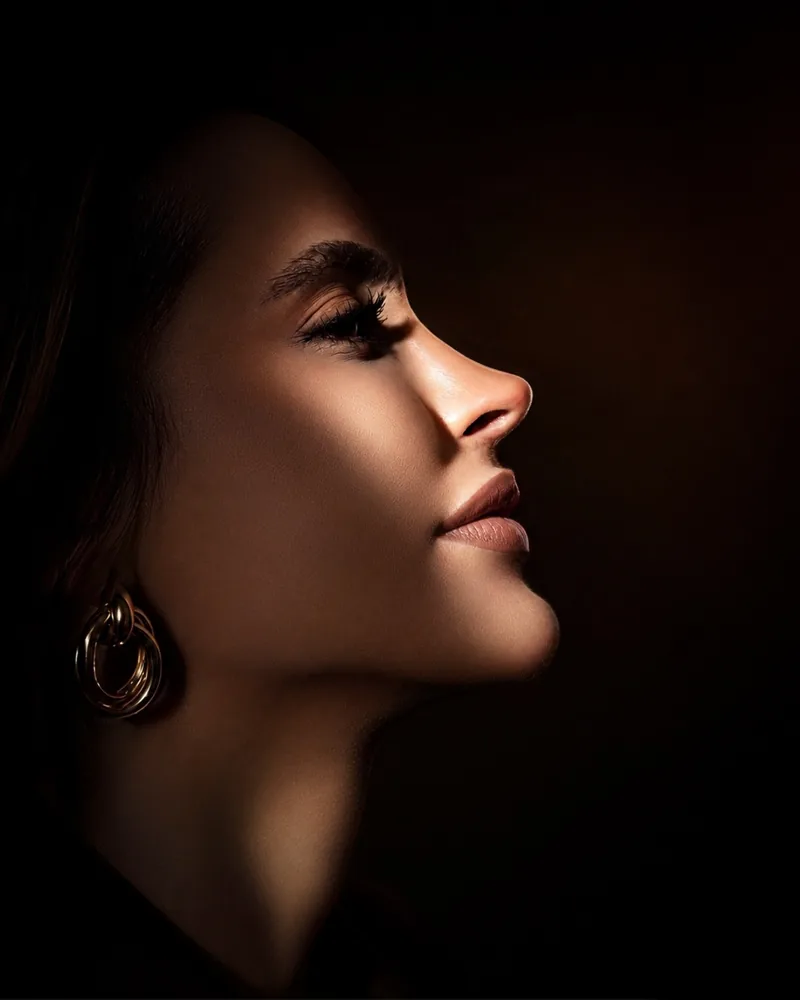
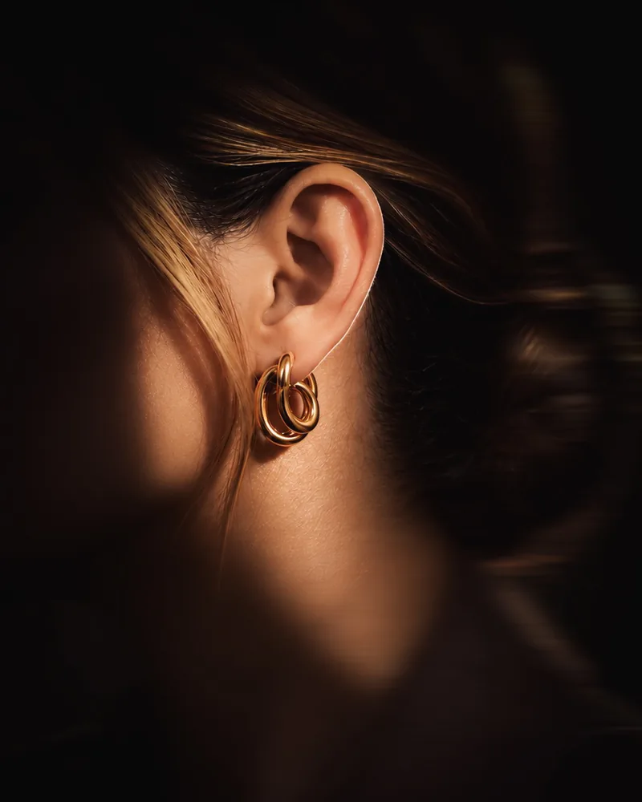
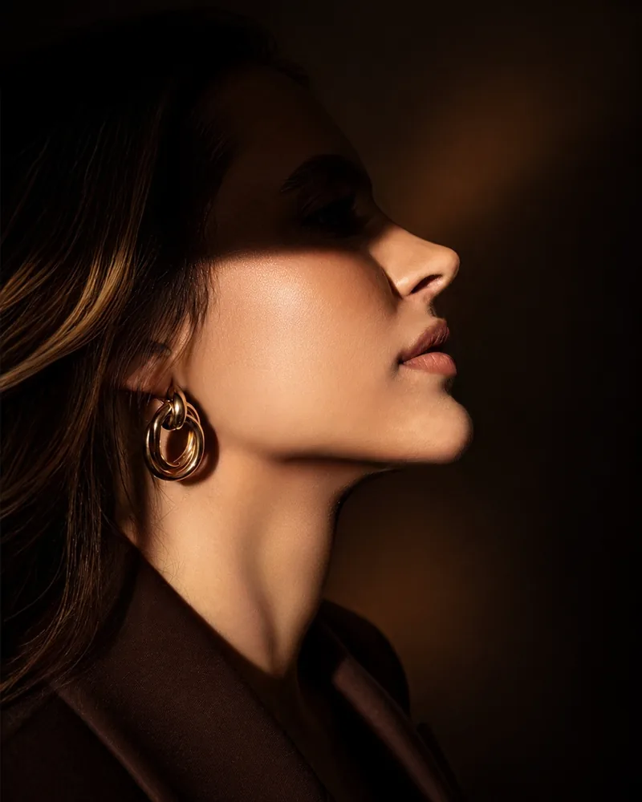

Cada etapa do processo é conduzida de forma personalizada, desde a avaliação inicial e o planejamento cirúrgico até o acompanhamento pós-operatório. Mais do que realizar uma cirurgia, o objetivo é proporcionar uma experiência segura, acolhedora e baseada na confiança.
Com atenção aos detalhes e foco na harmonia entre função e estética, cada decisão é tomada de forma individualizada para alcançar resultados naturais e respeitar a identidade de cada paciente.
Entendimento das suas queixas, desejos e expectativas
Avaliação clínica e exame físico
Análise da anatomia nasal e facial
Fotografias para planejamento cirúrgico
Simulação do resultado esperado
Estratégia cirúrgica individual
Recuperação e pós-operatório
Desde a consulta à cirurgia, espaços pensados para acolher você com conforto, privacidade e segurança em cada etapa da sua jornada.

Busca criar equilíbrio entre forma e função do nariz, respeitando as características únicas de cada rosto.
Procedimento que melhora o posicionamento e o formato das orelhas em busca de maior harmonia com os traços faciais.


Procedimento que valoriza o contorno facial por meio do ajuste da projeção e do formato do queixo.
Minha experiência com a otoplastia foi excelente! Da cirurgia à recuperação, tudo foi muito tranquilo e tive todo o suporte necessário. Com o passar dos dias, o resultado foi ficando cada vez mais bonito e natural. Estou muito satisfeita e feliz com a minha escolha! ❤️
Gostaria de agradecer à Dra. Louise pelo excelente atendimento. Ela é atenciosa, cuidadosa e competente, explica tudo com muita clareza e nos deixa seguros e confortáveis. Também fiz a avaliação para rinoplastia e fiquei ainda mais confiante. Não vejo a hora de realizar a cirurgia com ela!
A Dra. Louise foi excepcional no atendimento!! Super atenciosa, ouviu todas as minhas queixas e juntas chegamos a um resultado ainda melhor do que eu imaginava!!
Fiz com a Dra. Louise a cirurgia para correção do desvio de septo e fiquei impressionado com o resultado e com a rapidez da recuperação. Depois que o inchaço passou, percebi uma melhora incrível: hoje consigo respirar normalmente. Parece que descobri uma nova maneira de respirar!
Adorei minha experiência! A Dra. Louise foi muito atenciosa e cuidadosa desde a primeira consulta, sempre explicando tudo e me deixando muito tranquila. O procedimento foi super tranquilo e fiquei muito feliz com o resultado. Recomendo de olhos fechados!
Agende sua consulta e dê o primeiro passo para realizar a transformação que você sempre desejou. Atendimento presencial em Maringá-PR e consultas online para todo o Brasil.
Agendar pelo WhatsAppAv. Cidade de Leiria, 600 — Zona 04 · Maringá - PR · 87013-280
Consultório: (44) 99121-2021 · louiseiunklaus@gmail.com